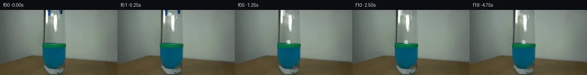

![首帧]()

Round 00
2026-11-05T15:01:06.756542+00:00像素候选变化代码 +167/−0inspection 更新
pixels b7305fa163fd8002 · code 0f500caaf244f02a
查看本轮 generate.py 真实 diff
--- previous/generate.py
+++ current/generate.py
@@ -0,0 +1,167 @@
+"""Deterministic local pixel continuation: masked pixels, shaded paper, analytic motion."""
+from pathlib import Path
+import math
+import numpy as np
+from PIL import Image, ImageDraw, ImageFilter
+from scipy.ndimage import gaussian_filter
+from scipy.sparse import lil_matrix
+from scipy.sparse.linalg import spsolve
+from artifact_io import save
+
+ROOT = Path(__file__).resolve().parent
+SOURCE = np.asarray(Image.open(ROOT/'first_frame.png').convert('RGB'))
+W,H=256,144
+S=4
+
+def polygon_mask(points):
+ out=Image.new('L',(W*S,H*S),0)
+ ImageDraw.Draw(out).polygon([(round(x*S),round(y*S)) for x,y in points],fill=255)
+ return np.asarray(out.resize((W,H),Image.Resampling.LANCZOS)).astype(float)/255
+
+# Observed tip silhouettes, including their antialiased edges.
+left=polygon_mask([(103.2,0),(110.6,0),(110.3,7),(109.4,12.3),(107.4,14.2),(104.6,13),(103.5,7)])
+right=polygon_mask([(128.4,0),(136.3,0),(136,6.2),(134,10.4),(131.5,10),(129.6,6)])
+# Small pale paper at the inner rim, separate from long vertical glass reflections.
+held=polygon_mask([(110.5,6),(115.7,5.7),(118,8),(117.8,12.3),(116.2,16.8),(111,15.8),(109.7,11)])
+removal=np.maximum.reduce([left,right,held])
+region=removal>0.025
+
+# Discrete harmonic interpolation reconstructs only vacated foreground areas.
+indices=np.argwhere(region)
+index_map={tuple(p):i for i,p in enumerate(indices)}
+A=lil_matrix((len(indices),len(indices)),dtype=float)
+b=np.zeros((len(indices),3),float)
+for i,(y,x) in enumerate(indices):
+ for dy,dx in [(1,0),(-1,0),(0,1),(0,-1)]:
+ yy,xx=y+dy,x+dx
+ if not (0<=yy<H and 0<=xx<W):continue
+ A[i,i]+=1
+ if region[yy,xx]:A[i,index_map[(yy,xx)]]-=1
+ else:b[i]+=SOURCE[yy,xx]
+solution=spsolve(A.tocsr(),b)
+clean=SOURCE.astype(float).copy()
+for p,val in zip(indices,solution):clean[tuple(p)]=val
+clean=np.clip(clean,0,255)
+
+# Reuse the observed tip colors rather than redraw the grabber.
+def moved_tip(mask,dx,dy):
+ alpha=Image.fromarray(np.round(mask*255).astype(np.uint8))
+ rgba=Image.fromarray(SOURCE).convert('RGBA');rgba.putalpha(alpha)
+ return rgba.transform((W,H),Image.Transform.AFFINE,(1,0,-dx,0,1,-dy),resample=Image.Resampling.BICUBIC)
+
+# A small irregular paper surface. Facet values are softly shaded, as in the dim source.
+outline=[(-5,-2.8),(-3.4,-5.0),(-.9,-5.8),(1.2,-4.5),(3.7,-4.8),(5.3,-2.2),(4.5,.1),(5.3,2.0),(2.1,4.0),(.1,4.8),(-2,3.3),(-4.2,3.0),(-5.8,.3)]
+facets=[([(-5,-2.8),(-3.4,-5),(-.9,-5.8),(-1.3,-.4)],(211,217,204)),
+ ([(-.9,-5.8),(1.2,-4.5),(3.7,-4.8),(2.0,-.8),(-1.3,-.4)],(233,236,221)),
+ ([(3.7,-4.8),(5.3,-2.2),(4.5,.1),(2,-.8)],(178,190,177)),
+ ([(-5,-2.8),(-1.3,-.4),(-2,3.3),(-4.2,3),(-5.8,.3)],(188,201,187)),
+ ([(-1.3,-.4),(2,-.8),(1,2.5),(-2,3.3)],(236,239,224)),
+ ([(2,-.8),(4.5,.1),(5.3,2),(2.1,4),(.1,4.8),(1,2.5)],(198,211,194)),
+ ([(-2,3.3),(1,2.5),(.1,4.8)],(160,181,171))]
+
+def paper(cx,cy,angle,wet=0,scale=1):
+ out=Image.new('RGBA',(W*S,H*S),(0,0,0,0));d=ImageDraw.Draw(out)
+ ca,sa=math.cos(angle),math.sin(angle)
+ def tr(points):return [((cx+scale*(x*ca-y*sa))*S,(cy+scale*(x*sa+y*ca))*S) for x,y in points]
+ d.polygon(tr(outline),fill=(191,204,189,255))
+ for pts,c in facets:
+ v=tuple(round(q*(1-.11*wet)) for q in c)
+ d.polygon(tr(pts),fill=(*v,255))
+ creases=[([(-3.4,-4.3),(-1.3,-.4),(1,2.5)],(134,155,145,105)),
+ ([(3.2,-4),(2,-.8),(4.2,.1)],(122,146,138,115)),
+ ([(-4.7,.5),(-2,1.3),(-2,3)],(130,152,141,90)),
+ ([(-.2,-4.4),(.8,-2.3)],(249,249,234,150))]
+ for pts,c in creases:d.line(tr(pts),fill=c,width=2,joint='curve')
+ # Fine deterministic uneven paper tone, with no evolving random noise.
+ arr=np.asarray(out).copy();yy,xx=np.mgrid[:H*S,:W*S]
+ texture=(np.sin(xx*1.7+yy*.65)+np.sin(xx*.4-yy*1.2))*1.0
+ arr[:,:,:3]=np.clip(arr[:,:,:3].astype(float)+texture[:,:,None],0,255).astype(np.uint8)
+ out=Image.fromarray(arr).filter(ImageFilter.GaussianBlur(.9))
+ return out.resize((W,H),Image.Resampling.LANCZOS)
+
+# The green front marking occludes paper and rear surface disturbances.
+Y,X=np.mgrid[:H,:W]
+front=np.zeros((H,W),float)
+front[(X>=94)&(X<=142)&(Y>=76)&(Y<=82)]=1
+front[(X>=97)&(X<=139)&(Y==75)]=.75
+front=gaussian_filter(front,.28)
… diff truncated; 80 more lines …